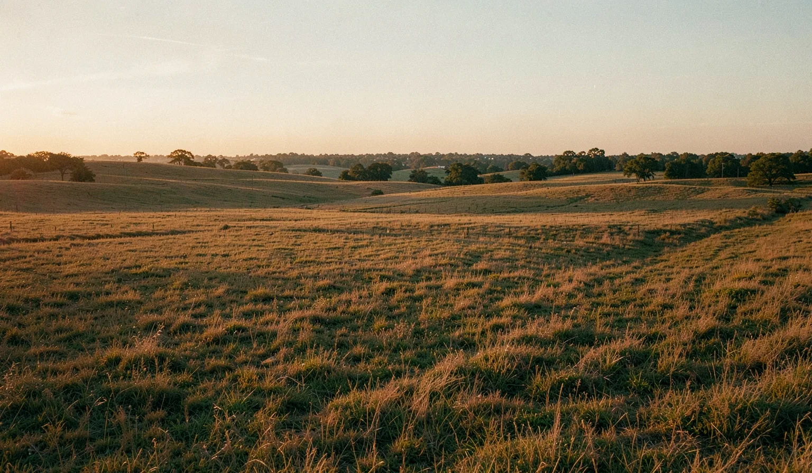

Land knowledge. Built on precision.
Every boundary
begins with clarity
Experienced surveyors. Civil engineering insight. Thoughtful, accurate work delivered when you need it.
Scroll to explore ↓
A considered approach
Grounded in experience. Measured in detail.
At American Survey, land surveying experience meets civil engineering knowledge. With state-of-the-art instruments and electronic data collection, our team brings care, clarity, and dependable accuracy to every project.
Explore our services
Where we work
Local knowledge.
Wide perspective.
From South Texas to the communities at the heart of the state and beyond, our team is ready to help you understand your land.

What we do
The right detail
for every decision
Reliable information is the foundation of good planning. We provide a broad range of land survey services for property owners, design teams, and builders.
0Texas regions served
0%Focus on accuracy
0Responsive team
0°Attention to detail
Start a conversation
Your project,
on solid ground
Have a question or need a survey? Tell us a little about your project and our team will help you find a clear next step.
Get in touchContact details
OfficeTexas, United States
Serving North, Central & South Texas
Serving North, Central & South Texas
Office hoursMonday – Friday
8:30 am – 5:00 pm
8:30 am – 5:00 pm